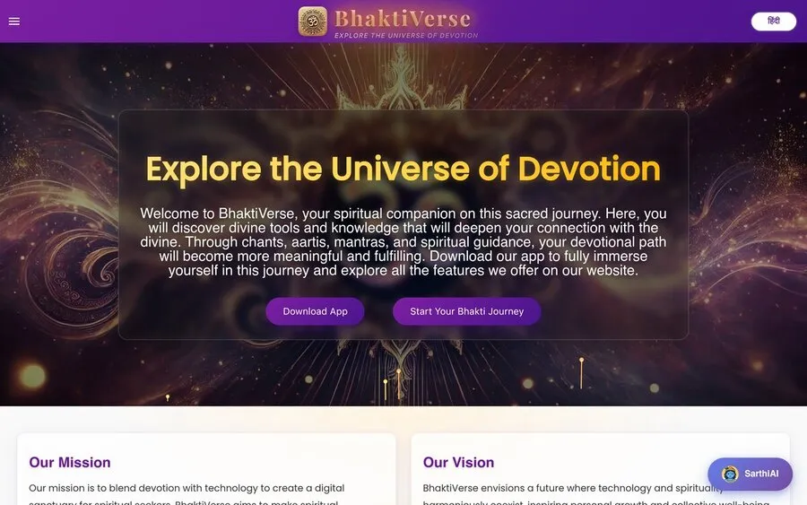
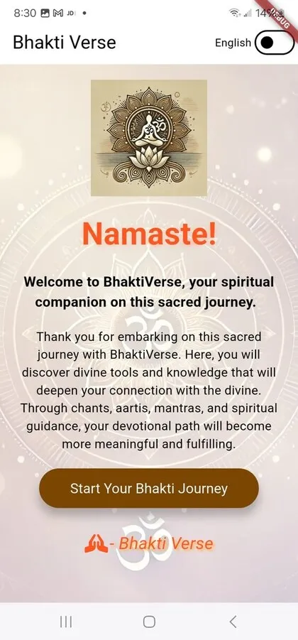
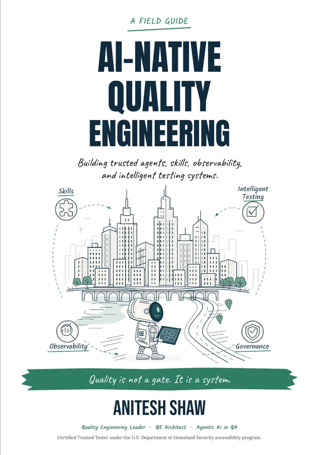
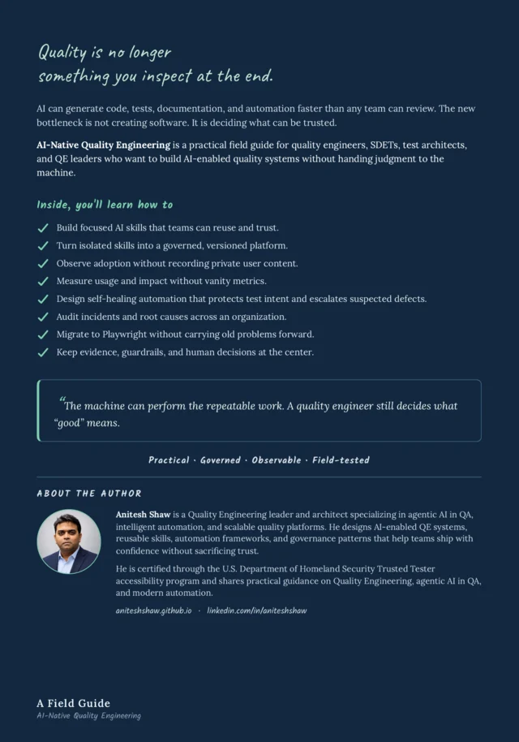

Things I own, from idea to launch.
Outside the day job I build products people use, tools I wish existed, and a book for the next generation of quality engineers. It's the same builder instinct behind QIS, pointed at things I care about personally.
A2Quest
Math practice that feels like an adventure.
Story-driven, adaptive math quizzes for kids. Questions adjust to how each child is doing, and progress unfolds as a quest rather than a worksheet. I built it because I wanted my own children to learn math through narrative. I designed, built, tested, and shipped it end to end.
- React
- Vite
- Supabase
- Netlify
- AI APIs
- Google sign-in
QIS-Skills
A senior QA lead's checklist, written down for Copilot.
A library of GitHub Copilot agent skills for quality work: story reviews, test design, Playwright automation, PR checks, defect triage, RCA and accessibility. I rebuilt the playbooks behind QIS as generic skills that any team could pick up. I started it because good QA judgment shouldn't depend on which two or three people happen to be free. The catalog is private for now, and I demo it on request.
- Copilot Agent Skills
- MCP
- Playwright
- Azure DevOps
- WCAG / 508


Bhaktiverse
A quiet place for devotion.
A devotional content platform and community for chants, aartis, mantras, and guidance, without the noise of general-purpose platforms. It grew out of my own practice. I designed and built both the website and the Android app.
- Web
- Android
- Content platform


AI-Native Quality Engineering
Quality is not a gate. It is a system.
A field guide for quality engineers and QE leads who've been asked to bring AI into their teams. It covers designing and testing AI skills, running them as a governed platform, measuring adoption honestly, self-healing automation that never hides a defect, RCA across an organization, and accessibility. The draft is finished and with reviewers. It isn't for sale.
The machine can perform the repeatable work. A quality engineer still decides what “good” means.
The builder behind the architect
Building is how I learn. Shipping a product end to end, from schema to store listing, teaches things about quality that no test plan can. Every one of these projects has made me a better quality engineering leader, and every one of them is mine, start to finish.